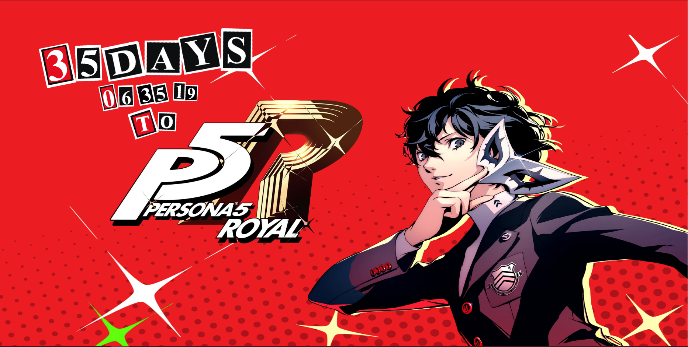
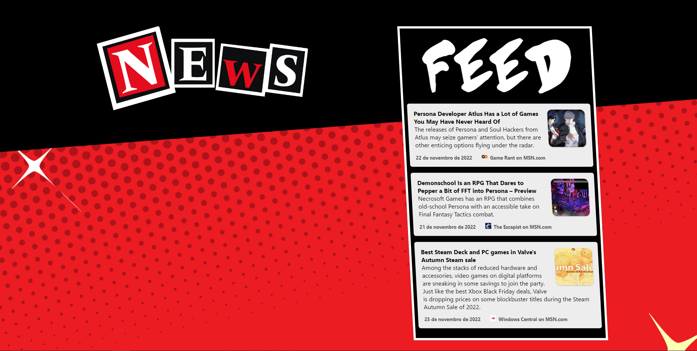

Projetos
Interação Sonora do Studio Ghibli
2022
Tive a oportunidade e o desafio de desenvolver uma interação temática para o projeto conjunto entre o Design Computacional e a Camerata de Cordas da Universidade Federal do Ceará. Desse modo, desenvolvi um algoritmo que utilizava o som como input para o desenrolar de certos comportamentos. Feita integralmente via Processing e diversos editores de imagens, como o Photoshop e o Aseprite. O código fonte está disponibilizado pelo meu perfil pessoal do Github.
Site Porfólio - Aldemir Martins
2022
Tive a chance de desenvolver meu primeiro Website, completamente via HTML, CSS e JavaScript como requisito de um projeto da disciplina Projeto Gráfico 3. O resultado foi extremamente educativo para mim, pois tive a oportunidade de aprender e implementar na prática - com todos os desafios de um projeto real com prazos reais- diversas questões que eu vinha estudando nos últimos meses acerca de desenvolvimento Web. Certos pormenores foram desafiadores no processo, como o uso do Flexbox, o trabalho com imagens e a responsividade, mas eles definitivamente serviram como um meio de praticar a utilização destes recursos tão fundamentais ao desenvolvimento web.
Countdown Persona 5 Royal
Após estudar React por algum tempo, me surgiu o questionamento de qual seria meu primeiro projeto com ele. Depois de pensar e pensar, decidi fazer algo que realmente me interessava, com um design bem original: uma página Web de contagem regressiva para o Lançamento do jogo Persona 5 Royal para diversas plataformas! O processo foi extremamente didático e rico. Apesar de simples, a aprendizagem que tive em utilizar Hooks, controlar States e manipular imagens (muitas e muitas imagens) foi fundamental para me iniciar no mundo do React.
Pensando em como enriquecer a experiência do site, incorporei, em parceria com meu amigo e também programador Levi Rios, uma API de notícias que se atualiza a cada 8 horas, com um SearchTerm fixo para sempre trazer notícias relacionadas a série do jogo. Caso queira acessar o site e ver os códigos ( agora que o jogo já foi lançado ele mostra quantos dias se passaram desde o lançamento!) aqui está o link: https://lnkd.in/dDHWcSrK
Site do projeto Co.necto
Meu segundo projeto utilizando o React foi o desenvolvimento de um site mais ambicioso, quando comparado ao primeiro, visto que esse iria incorporar Interação no site! Isso foi feito pensando como a forma perfeita de representar a natureza do nosso projeto. Ele ainda está em etapa de produção mas já está bem próximo da etapa final. Segue o link para acompanhar o andamento do projeto https://conecto-git-main-gusholz.vercel.app